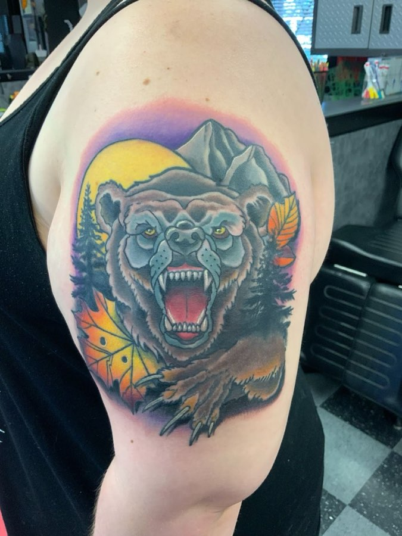
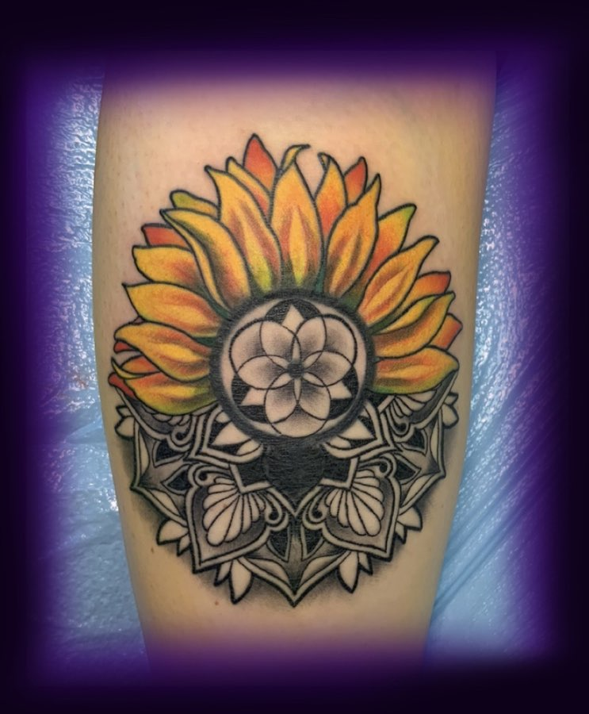
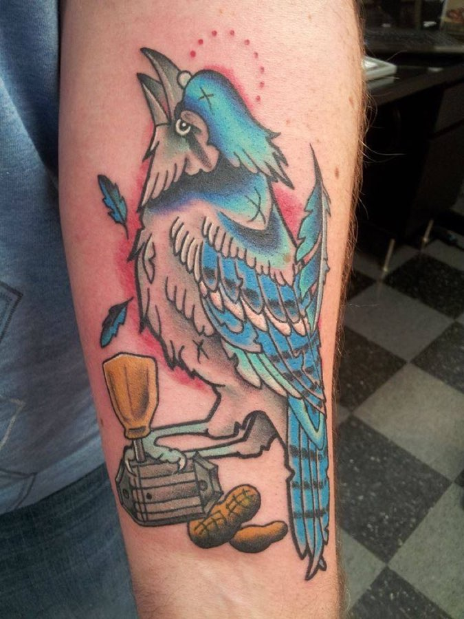
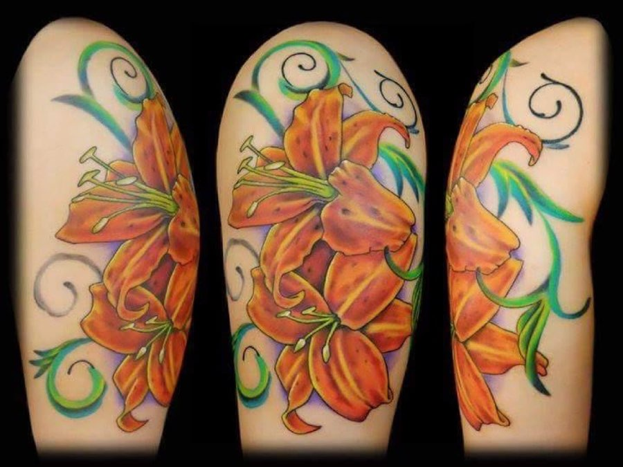
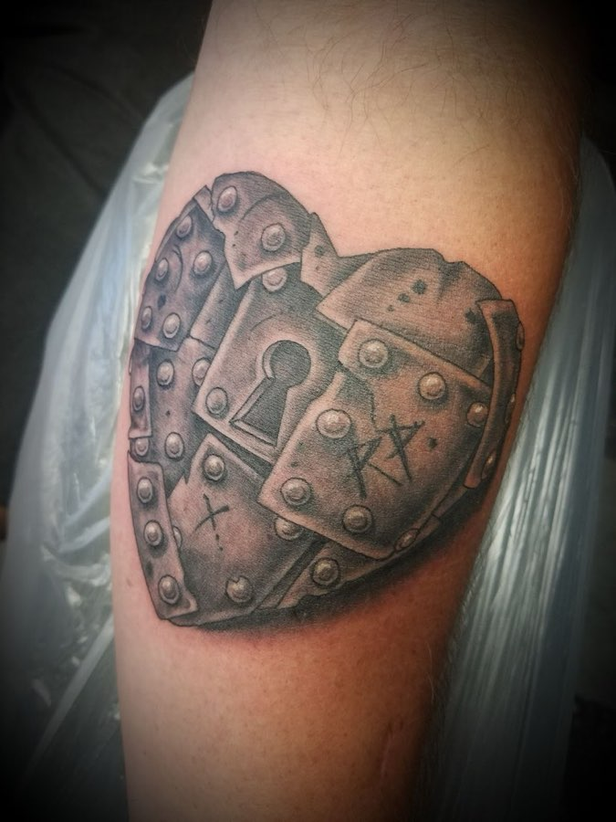
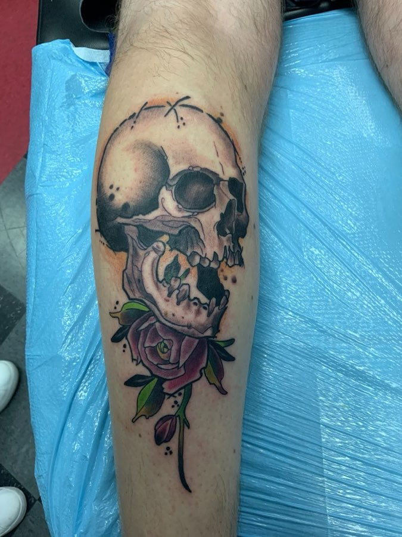
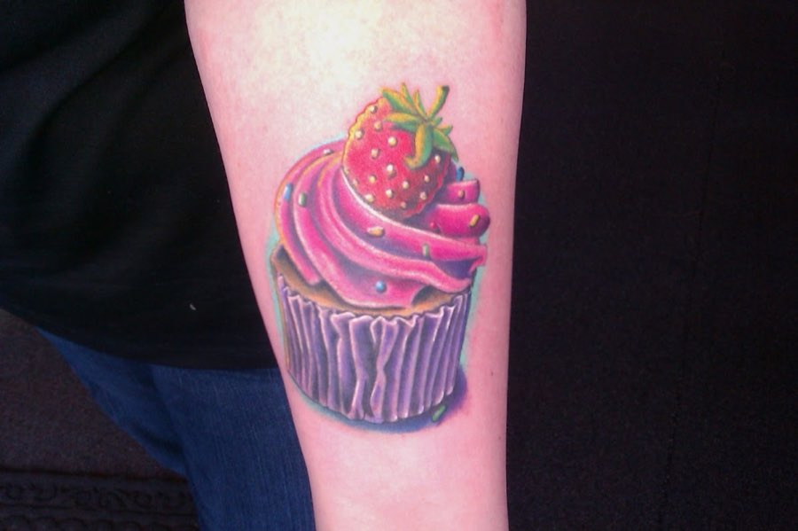

Epic Ink artists
Meet theKidd brothers
Each artist specializes in different styles and sizes of tattooing. Find the one whose work speaks to you and ask for them by name. All artists are independently owned & operated.

Mark Kidd
Tattoo artist · 26 years tattooing
Mark spent much of his life running wild along the beaches of the West Coast and in the mountains of the Pacific Northwest, from Steamboat Springs and Los Angeles to Santa Cruz, Portland, Ashland and Medford. Raised on sun, sand and rock n' roll, he still loves to ride his Harley Davidson, play guitar, and anything that goes fast, is painted flat black and has pinstripes.
It started at seven, drawing tattoos on the other kids in school. Around 1999 his little brother Kory scored a tattoo machine and asked Mark to help make it work. Shunned by the old school biker tattooers, Mark kept digging, which led to a deep respect for the trade and two formal “old school” apprenticeships, the second with a shop owner in Portland, Oregon.
“Tattooing is my biggest passion in life after friends and family. I live it, love it and breathe it.”
Book a free consultation with Mark











Kory Kidd
Tattoo artist · “One mysterious dude…”
Kory is the reason the Kidd family got into tattooing in the first place: he's the little brother who brought home that first tattoo machine. His portfolio runs from big Japanese-inspired sleeves with peonies and koi to snakes wrapped in peonies, samurai masks and spooky bats.
Want a pressure free “meet & greet” to explore art and prices and get your questions answered? Book a free consultation with Kory.
Book a free consultation with Kory


Not sure who's right for you?
Send us your idea and we'll match you with the artist whose style fits best.